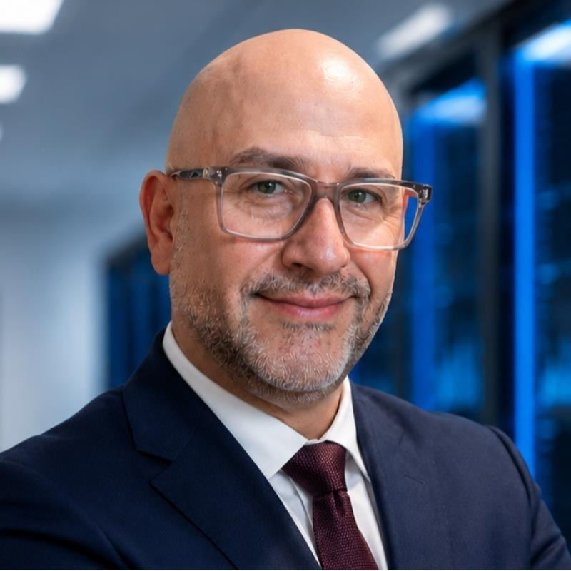
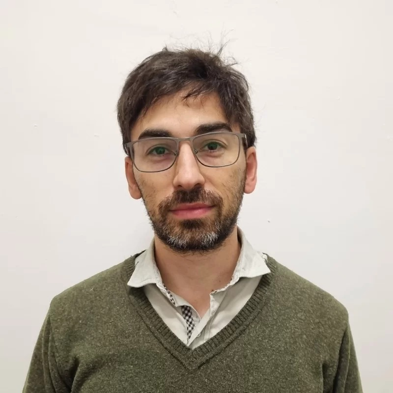
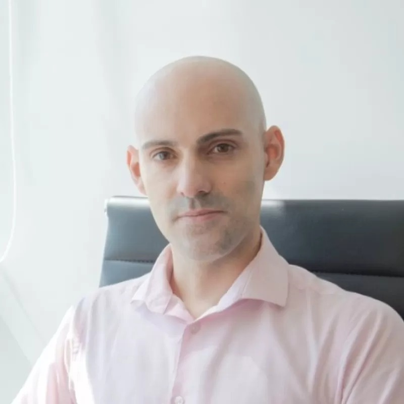
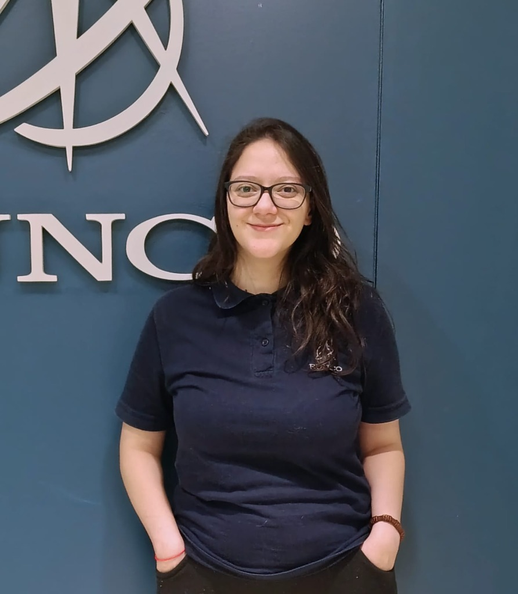
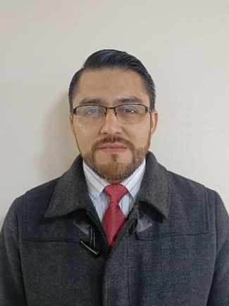
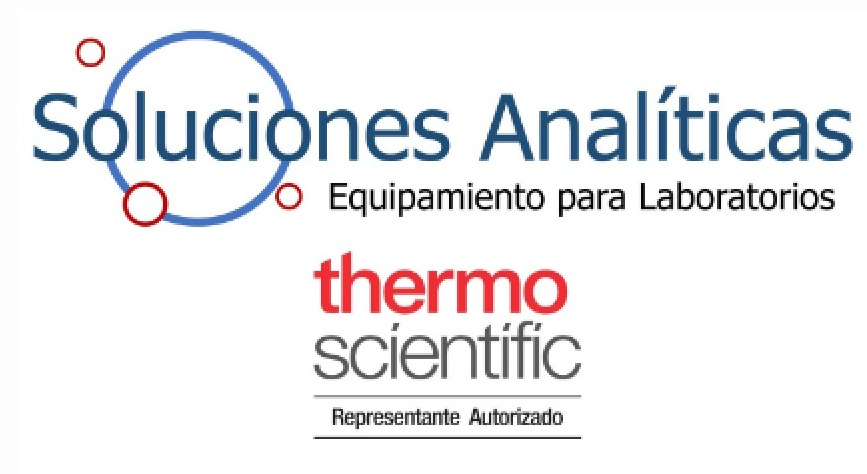
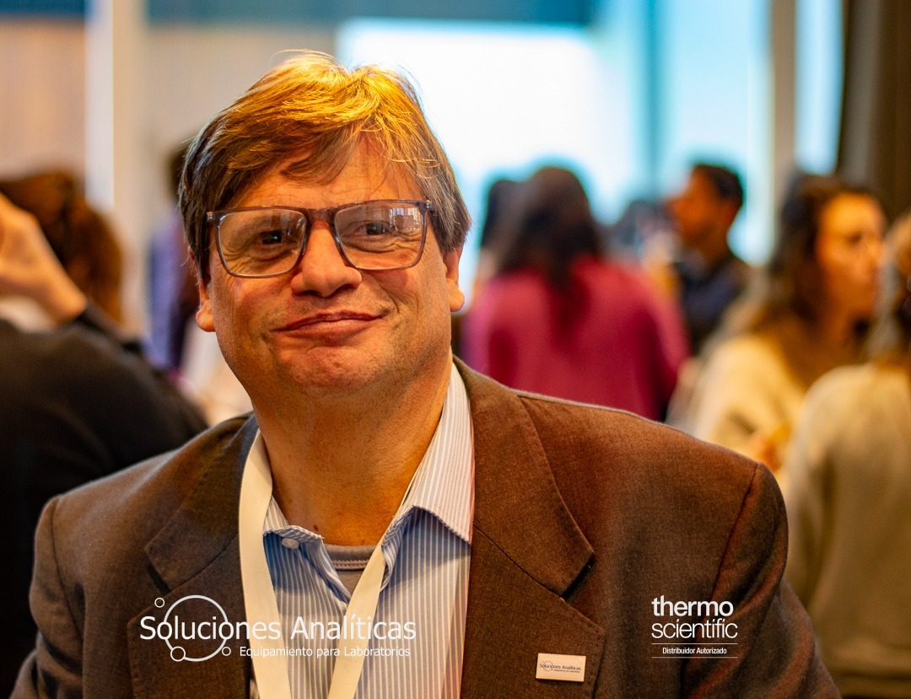
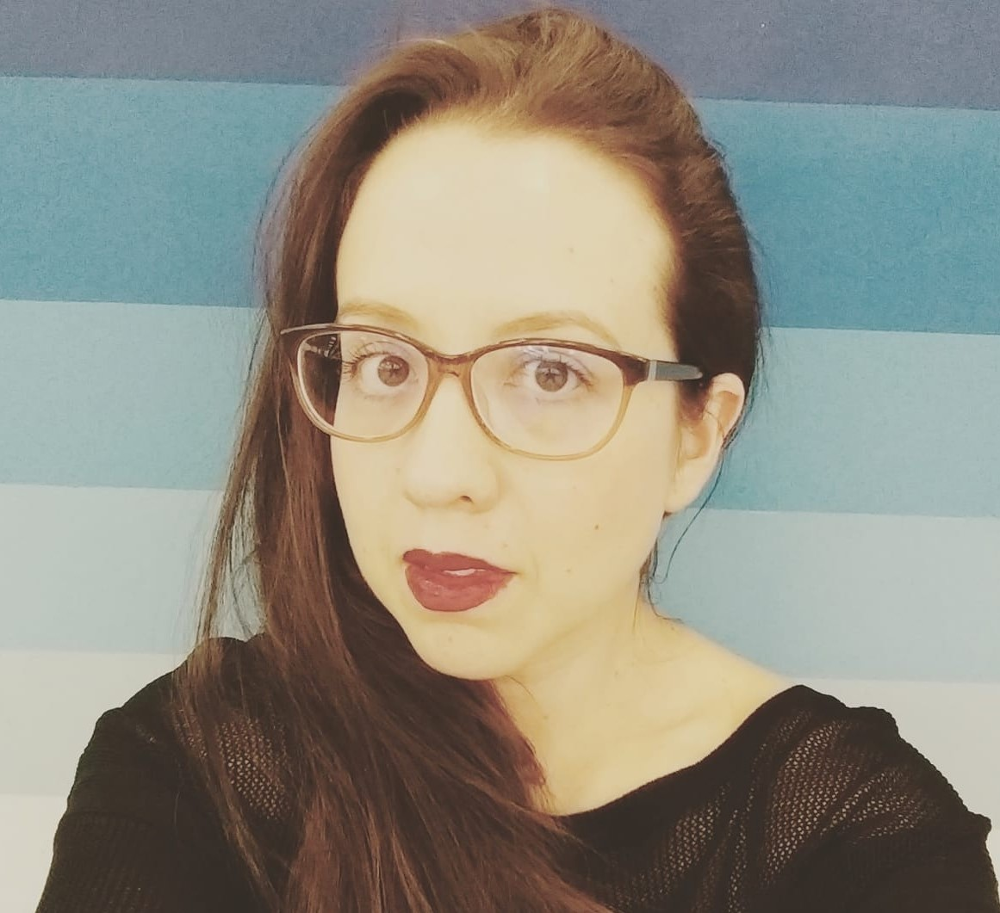
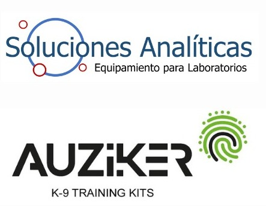
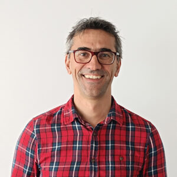

Capacitación Avanzada
Únicamente Miércoles 14
Talleres Técnicos y Workshops
Espacios exclusivos de formación práctica junto a las empresas líderes del sector forense y tecnológico. Conoce las últimas innovaciones en análisis criminal, equipamiento e investigación científica. Los talleres se dictarán únicamente el día Miércoles 14.
SALÓN A
Miércoles 14 • 13:00 a 14:00 HS

"Modernizando el análisis criminal con microscopia digital 3D y análisis cuantitativo"

Petar Zencovich
Especialista Forense • LeadsOnline
Miércoles 14 • 14:00 a 15:00 HS

"Mo-Sho y nuevas tecnologías multiespectrales aplicadas al análisis forense"

Carlos M. Diribarne
Magíster en Criminalística

Diego A. Alvarez
Magíster en Criminalística
SALÓN B
Miércoles 14 • 13:00 a 14:00 HS

"Escena del Hecho 4.0: Innovación para la Investigación Criminal"

Abril Fernández
Asesora Comercial Especializada • División Geoespacial
RUNCO
Miércoles 14 • 14:00 a 15:00 HS
DUARTE ULLOA
"Validación forense de documentos de identidad-viaje: estándares internacionales y métodos de verificación"

Especialista Forense Duarte Ulloa
Validación de Documentos de Identidad y Viaje
SALÓN C
Miércoles 14 • 13:00 a 14:00 HS

Soluciones Analíticas: Bloque 1 — Tecnologías Forenses Avanzadas

Sergio Polo
Soluciones Analíticas S.A.
"Nuevos Horizontes e Innovaciones en Técnicas
Espectroscópicas y Elementales para el Análisis de Evidencia Criminal"

Dra. Citlalli Aguilar
Thermo Fisher Scientific
"Aplicaciones de espectrometría de masas Thermo
Scientific en los campos toxicológico y forense"
Miércoles 14 • 14:00 a 15:00 HS

Soluciones Analíticas: Bloque 2 — Soluciones Integrales Forenses

Dr. Luis Bartolomé
Responsable de Desarrollo Técnico • AUZIKER
"Avances significativos en el desarrollo de
dispositivos para el entrenamiento de unidades caninas de detección"
Dr. en Química – Universidad del País Vasco •
Técnico SGIker
¿Tienes consultas sobre las inscripciones a los talleres?
Los cupos son estrictamente limitados por la capacidad de cada salón. Asegura tu lugar registrándote directamente en cada taller.